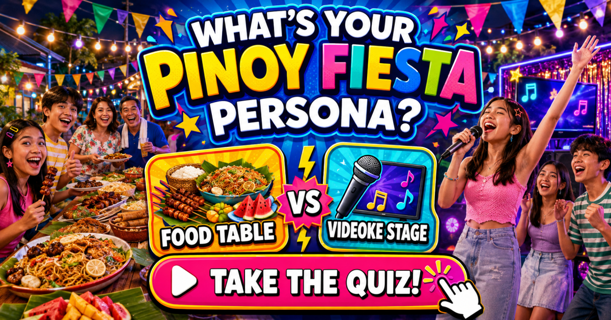

FUN PINOY FIESTA TEST
Your Pinoy
Fiesta Persona
Food table or videoke stage?
Pick what you really do in eight familiar Pinoy fiesta moments.
PICK YOUR REAL FIESTA MOVE
YOUR OFFICIAL FIESTA PERSONA

A fiesta test made for Pinoy households
From daily greetings to reunion plans and surprise throwback photos, every Filipino family GC has familiar characters. This quick game reveals which role you naturally play.
Choose eight honest answers to unlock one of eight shareable results. Percent comparisons are fun estimates based on your answers, not live population data.
There Is More Than One Way to Enjoy a Fiesta
A fiesta can bring together food, family, neighbors, visitors, music, games and a lot of different personalities in the same place.
Someone knows where the best food is. Someone is ready for videoke. Another person is joining the palaro, taking photos or helping make sure guests have what they need.
And somebody may already be thinking about what can be taken home afterward.
What’s Your Pinoy Fiesta Persona? is a lighthearted quiz inspired by those different ways of enjoying a Filipino fiesta.
From Food to Videoke
The quiz has eight two-choice situations involving familiar fiesta moments such as food, videoke, palaro, photos, hosting and takeout.
Choose the option that feels more like you.
Your combination of choices is used to match you with one of eight fiesta personas. The result is simply a playful interpretation of how you answered.
There are no right choices and no single “proper” way to enjoy a fiesta.
Bring the Whole Barkada
Fiestas are social, so this quiz is more fun when other people play too.
Share it with friends or family and compare results. You might end up with the person who controls the videoke microphone, the one focused on the food, the photo person or a completely different fiesta character.
If everyone gets a different result, that probably makes the group more interesting anyway.